지적기사 (2003-05-25 기출문제)
1과목: 지적측량
1. 다음 중 천문위도의 설명으로 옳은 것은?
- 지구상 한점과 지구중심을 맺는 직선이 적도면과 이루는 각
- 지구상 한점에서 지오이드에 대한 연직선이 적도면과 이루는 각
- 지구상 한점에서 타원체에 대한 법선이 적도면과 이루는 각
- 지구상 한점에서 물리적 지표면에 대한 법선이 적도면과 이루는 각
(정답률: 알수없음)

2. 지적삼각점의 측량성과는 누가 보관하는가?
- 시.도지사
- 행정자치부장관
- 소관청
- 시.군.구 지적과장
(정답률: 알수없음)
3. 경위의로 수평각을 관측하는 경우 망원경을 정반으로 하여 관측하는 가장 큰 목적은?
- 관측오차를 발견하기 위하여
- 외심오차를 발견하기 위하여
- 기계조정의 불완전에서 생기는 오차를 소거
- 망원경이 회전되기 때문에
(정답률: 알수없음)
4. 지적측량에서 사용하는 원점의 설명중 옳지 않은 것은?
- 지적측량에 사용하는 좌표의 3대 원점은 동부원점, 중부원점, 서부원점이다.
- 3대 원점을 기준으로 지구의 표면을 평면으로 정하는 투영식은 가우스상사 이중투영법이다.
- 특별도근 측량을 실시한 별도원점을 사용하는 지역도 있다.
- 경인 및 대구지역에 13개의 구소삼각원점이 있다.
(정답률: 알수없음)
5. A, B점간 거리를 50m 강제권척으로 측정하여 250m를 얻었다. 이 강제권척을 표준척과 비교하니 5㎜가 줄어 있었다면 정확한 거리는?
- 249.975m
- 248.750m
- 250.025m
- 250.250m
(정답률: 알수없음)
6. 지적삼각점의 수평각 관측에서 3대회의 방향 관측법에 의한 윤곽도로서 옳은 것은?
- 0° , 90° , 180°
- 0° , 60° , 120°
- 0° , 180° , 270°
- 0° , 30° , 60°
(정답률: 알수없음)
7. 어떤 도선의 거리가 150m, 방위각 240° 일 때 이 도선의 종선차의 값은?
- 75m
- -75m
- -129.9m
- 129.9m
(정답률: 알수없음)
8. 지적도근측량에서 배각법에 의한 1등도선의 변수가 16변이었다. 각 측정에서 허용오차는?
- ± 30″ 이내
- ± 40″ 이내
- ± 80″ 이내
- ± 120″ 이내
(정답률: 알수없음)
9. 광파측거기를 사용하는 지적삼각측량에서는 다음 어느 면에 투영된 거리를 구하여 삼각형의 내각을 계산하는가?
- 두점 표고의 평균면
- 표고기준이 되는 면
- 측지좌표 원점면
- 평면좌표 원점면
(정답률: 알수없음)
10. 측판측량에 의한 세부측량을 방사법으로 시행하는 경우 축척 1/1,000 지역에서 1 방향선의 지상길이는 몇 m까지 허용하는가?
- 100m
- 80m
- 60m
- 50m
(정답률: 알수없음)
11. 경위의측량법에 의하여 세부측량을 실시할 경우 경계점 좌표를 계산할 때의 설명으로 틀린 것은?
- 각을 초단위로 계산한다.
- 변장을 ㎝단위로 계산한다.
- 진수는 6자리 이상을 사용한다.
- 좌표는 ㎝단위까지 산출한다.
(정답률: 알수없음)
12. 그림과 같이 원필지 ABCD를 분할선 PQ로 분할할 때 협각이 각각 α, β, γ, δ 이면 성립하는 등식은?
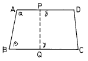
- α + β = γ + δ
- α + r = β + δ
- α + δ = β + r
- α + β = β + δ
(정답률: 알수없음)
13. 지적삼각보조점의 수평각 관측방법은?
- 단각법
- 배각법
- 방향관측법
- 각관측법
(정답률: 알수없음)
14. 경위의측량방법으로 세부측량을 시행시 측량결과도의 기재사항이 아닌 것은?
- 지상에서 측정한 거리 및 방위각
- 측량대상 토지의 경계점간 실측거리
- 측량대상 토지의 점유 현황선
- 측량의 기하적과 지상에 측정한 거리
(정답률: 알수없음)
15. 세부측량을 경위의측량방법으로 정반 1회 관측하여 그 교차가 얼마 이내인 경우 그 평균치로 하는가?
- 1초
- 5초
- 1분
- 5분
(정답률: 알수없음)
16. 다음 지적도근측량의 설명 내용 중 틀리는 것은?
- 1등 도선은 가,나,다 순으로 2등도선은 ㄱ,ㄴ,ㄷ순으로 표기한다.
- 다각망 도선법 시행시 3점 이상의 기지점을 포함한 결합다각방식에 의한다.
- 지적도근점은 결합도선에 의하되 지형상 부득이한 경우 개방도선에 의할 수 있다.
- 경위의 측량방법에 의하여 도선법으로 측량할 때, 1도선의 점의 수는 부득이한 경우 50점까지로 할 수있다.
(정답률: 알수없음)
17. 측판측량에서 도곽선의 신축에 따른 거리보정식은?
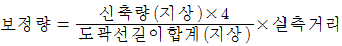
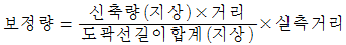
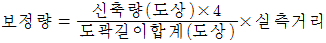
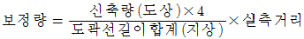
(정답률: 알수없음)
18. 삼변법으로 면적을 측정하고자 할 때 그 면적(A)의 계산식은? (단, a, b, c는 삼각형의 각변, s = (a+b+c) / 2 )
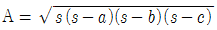
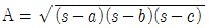
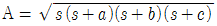
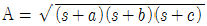
(정답률: 알수없음)
19. 등록전환시 임야대장의 면적이 3,000m2일 때 면적의 오차 허용범위로 맞는 것은? (단, 축척은 1/3,000이다.)
- 111m2
- 222m2
- 333m2
- 444m2
(정답률: 알수없음)
20. 경계점좌표등록부를 비치하는 지역의 측량방법 중에서 거리가 먼 것은?
- 각 필지의 경계점 측정시 도선법, 방사법 또는 교회법에 의한다.
- 지형, 지물에 막힐 때에는 경위의를 사용치 않고 간접적인 방법을 사용할 수 있다.
- 동일한 경계점의 측량성과 차이는 0.10미터 허용범위 이내여야 한다.
- 각 필지의 경계점 측점번호는 오른쪽 위에서부터 왼쪽으로 경계를 따라 일련번호를 부여한다.
(정답률: 알수없음)
2과목: 응용측량
21. 지상에서 이동하고 있는 물체가 사진상에 나타나 그 이동한 물체를 입체시 할 때 그 운동으로 영상시차가 발생하는 현상을 무엇이라 하는가?
- 정사 현상(orthoscopic effect)
- 역 현상(pseudoscopic effect)
- 카메론 현상(cameron effect)
- 반사 현상(reflection effect)
(정답률: 알수없음)
22. 터널을 설치하는 것이 유리한 경우로 옳지 않은 것은?
- 절취깊이가 10m 이상일 경우
- 지질이 좋지 못하여 절취면의 유지가 곤란한 경우
- 경제적 여건을 고려하여 터널의 설치가 유리한 경우
- 지질이 좋지 않아 절취면의 보수작업이 곤란한 경우
(정답률: 알수없음)
23. 사진에서 볼 때 태양광선을 받아 주위보다 밝게 찍혀 보이는 부분을 무엇이라 하는가?
- Sun spot
- Lineament
- Overlay
- Shadow spot
(정답률: 알수없음)
24. 곡률반경 100m 인 단곡선을 편각법에 의하여 설치할 때 노선 중심선 간격을 40m로 하려면 편각은 얼마로 하면 되는가?
- 5° 44'
- 10° 20'
- 11° 28'
- 13° 44'
(정답률: 알수없음)
25. 수준측량에 대한 설명으로 적합하지 않은 것은?
- 어느 지점의 높이는 기준면으로부터 연직거리로 표시한다.
- 표고는 두점사이의 높이차를 의미한다.
- 수준점은 1등수준점 및 2등수준점으로 구분한다.
- 기포관의 감도는 기포1눈금에 대한 중심각의 변화를 의미한다.
(정답률: 알수없음)
26. 사진의 판독요소에 해당되지 않는 것은?
- 색조와 형상
- 모양과 질감
- 크기와 음영
- 구성과 배치
(정답률: 알수없음)
27. 기포관의 1눈금이 2㎜인 레벨로 150m 거리에 있는 표척을 시준하니 2.563m 였고, 기포를 3눈금 이동시켜 시준한 결과 2.608m 였다. 이 때 기포관의 감도는?
- 20.63″
- 10.63″
- 40.63″
- 30.63″
(정답률: 알수없음)
28. 노선의 단곡선에서 중앙종거
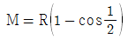
이고 곡률반경 R이 400m, 교각 I = 120° 이면 M'는?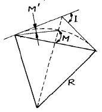
- 약 50m
- 약 100m
- 약 150m
- 약 200m
(정답률: 알수없음)
29. 정위망원경으로 측정한 연직각이 –16° 30' 26" 이고 주망원경과 정위망원경의 시준선 사이의 거리가 0.09m일 때 시준점까지의 경사거리가 50.50m였다. 이때 정확한 연직각은?
- -16° 24' 18"
- -16° 36' 34"
- 73° 23' 26"
- 106° 24' 18"
(정답률: 알수없음)
30. 다각측량에 대한 설명으로 적합하지 않은 것은?
- 정확도가 요구되는 곳에서는 결합트래버스가 적합하다.
- 각관측오차는 각의 크기에 비례하여 배분한다.
- 위거는 어느 측선을 남북자오선에 투영한 거리이다.
- 어느 측선의 중심에서 남북자오선에 내린 수선의 길이는 횡거이다.
(정답률: 알수없음)
31. 산지는 실제보다 돌출하여 높고 기복이 심하며 계곡은 실제보다 길고 사면은 실제의 경사보다 급한 감을 주는 것은 어느 것에 의한 영향인가?
- 형상
- 음영
- 색조
- 과고감
(정답률: 알수없음)
32. 지형측량에 관한 다음 설명 중 틀린 것은?
- 지형의 표시방법에는 자연적도법(게바법, 음영법)과 부호적도법(등고선법, 단채법)이 있다.
- 지성선은 등고선을 묘사하기 위해 중요한 선으로 능선, 곡선, 최대경사선, 경사변환점 등이 있다.
- 축척 1/50000, 1/25000, 1/5000 지형도의 주곡선 간격은 각각 20m, 10m, 2m 이다.
- 등고선 중 간곡선 간격은 조곡선 간격의 2배이다.
(정답률: 알수없음)
33. 다음의 노선공사측량 중 시공측량에 속하지 않는 것은?
- 용지측량
- 토공의 기준틀 측량
- 주요말뚝의 인조점 설치 측량
- 중심말뚝의 검측
(정답률: 알수없음)
34. 다음은 U.T.M 좌표에 대한 설명이다. 틀린 것은?
- 경도의 원점은 중앙자오선이다.
- 위도의 원점은 적도상에 있다.
- 중앙 자오선에서의 축척계수는 0.9996이다.
- 종대와 횡대는 각 각 60개의 구역으로 나누어진다.
(정답률: 알수없음)
35. 2점법에 의하여 평균유속을 구하는 경우 수면으로부터 수심 얼마의 유속을 측정해야 하는가?
- 수심 5/10, 6/10 되는 곳
- 수심 4/10, 6/10 되는 곳
- 수심 2/10, 8/10 되는 곳
- 수심 3/10, 7/10 되는 곳
(정답률: 알수없음)
36. 1/50,000의 지형도에서 두 A,B점 간을 도상거리로 측정한바 3㎝였다. 어느 수직항공사진 상에서 같은 두 A,B점 간을 측정하니 15㎝였다면 이 사진의 축척은 얼마인가?
- 1/5,000
- 1/10,000
- 1/15,000
- 1/20,000
(정답률: 알수없음)
37. 기복변위는 항공사진의 특수 3점 중 어느 점을 중심으로 방사상 변위가 발생되는가?
- 연직점
- 주점
- 등각점
- 중심투영점
(정답률: 알수없음)
38. 단곡선을 설치하고자 한다. 곡선반경 R = 250m, 교각 I = 43° 57' 20" 일 때 접선장(T .L)은?
- 100.941m
- 100.894m
- 100.698m
- 100.449m
(정답률: 알수없음)
39. 다음 중 관계가 잘못된 것은?
- 방향각 = 진북방위각 + 자오선수차
- 극거리(P) = 90° - 적위
- 고도(h) = 90° - 천정거리
- 세계시(GMT) = 한국표준시 + 12h
(정답률: 알수없음)
40. 등고선의 간격을 결정할 때 고려되지 않는 사항은 다음중 어느 것인가?
- 축척
- 지형의 상태
- 측량거리
- 측량목적
(정답률: 알수없음)
3과목: 토지정보체계론
41. 도시에 관한 설명중 거리가 먼 것은?
- 인구와 직업의 구성에서 주로 제조업과 판매업에 종사하는 사람으로 구성된다.
- 규모와 인구밀도 측면에서 농촌보다 상대적으로 크다
- 주민의 구성에 있어 동질적 집단의 성격이 강하다.
- 주민들간의 상호접촉은 빈번하고 광범위하지만 일시적이고 간접적이다.
(정답률: 알수없음)
42. 도로의 가로망 분류체계에서 서울, 파리 등에서 일반적으로 채택하고 있는 형태는?
- 격자형
- 환상 방사선형
- 집중형
- 불규칙형
(정답률: 알수없음)
43. 우리나라의 도시기본계획의 수립에 관하여 기술한 것 중 잘못된 것은?
- 공청회(公聽會)를 거쳐야 한다.
- 수도권에 속하지 아니하고 광역시와 경계를 같이하지 아니한 시 또는 군으로서 인구 10만명 이하인 시 또는 군은 도시기본계획을 수립하지 아니할 수 있다.
- 건설교통부장관이 수립하고 결정한다.
- 도시기본계획을 수립 또는 변경하는 때에는 미리 지방의회의 의견을 들어야 한다.
(정답률: 알수없음)
44. 도시인구가 10만이고, 주거지역에서 1인당 택지점유면적이 30m2, 공공용지율이 40%라고 하면 총 주거지역의 면적은?
- 4.0km2
- 5.0km2
- 6.0km2
- 7.5km2
(정답률: 알수없음)
45. 다음중 지구단위계획의 내용에 포함될 사항이 아닌 것은?
- 지역· 지구의 세분
- 기반시설의 배치
- 교통처리계획
- 자연공원의 배치계획
(정답률: 알수없음)
46. 고대 그리이스의 중심광장 이름은?
- place
- forum
- agora
- piazza
(정답률: 알수없음)
47. 도시의 공간구조이론의 종류와 주장한 사람이 옳게 연결된 것은?
- 크리스탈러(W. Christaller) - 중심지 이론(central place theory)
- 해리스(Harris)와 울만(Ulman) - 동심원지대이론(concentric zone theory)
- 버제스(Burgess) - 선형이론(sector theory)
- 호이트(Hoyt) - 다핵심이론(multiple-nuclei theory)
(정답률: 알수없음)
48. 도시권에서 인구성장을 일정 상한선까지 통제하고자 할때 인구목표와 성장 속도와의 관계를 분석하는데 유효한 방법은?
- 로지스틱 곡선법
- 지수함수법
- 최소자승법
- 비교유추법
(정답률: 알수없음)
49. 야간인구 밀도는 다음의 어느 곳에서 측정하는 것이 가장 타당한가?
- 주거지(住居地)
- 업무지(業務地)
- 도심(都心)
- 부도심(副都心)
(정답률: 알수없음)
50. Adickes법을 처음 제정한 나라는?
- 오스트리아
- 독일
- 영국
- 프랑스
(정답률: 알수없음)
51. 다음중 도시재개발 방식과 거리가 먼 것은?
- 도시미화(Beautification)
- 지구보존(Conservation)
- 도시수복(Rehabilitation)
- 지구재개발(Redevelopment)
(정답률: 알수없음)
52. 도시관리계획은 결정 고시(告示)가 있는 날부터 몇 일 후에 그 효력이 발생하는가?
- 2일
- 3일
- 5일
- 7일
(정답률: 알수없음)
53. 도시개발구역으로 지정할 수 있는 최소한도의 기준면적으로 옳은 것은?
- 도시지역안의 주거지역은 3만m2 이상
- 도시지역안의 공업지역은 3만m2 이상
- 도시지역안의 자연녹지지역은 5만m2 이상
- 도시지외의 지역은 3만3천m2 이상
(정답률: 알수없음)
54. 우리 나라에서 실시하는 인구주택총조사의 원칙적인 기준 일시는?
- 11월 1일 오전 0시 현재
- 10월 1일 오전 0시 현재
- 11월 1일 오전 1시 현재
- 10월 1일 오전 1시 현재
(정답률: 알수없음)
55. 일상생활 중심, 근린생활의 촛점을 중심으로 유기적이며 종합적인 지구 개발 계획은?
- 근린 주구계획
- 토지구역 정리 계획
- 획지 분할 계획
- 일단의 계획 지구내의 공동시설 계획
(정답률: 알수없음)
56. 산업혁명 이전의 대도시와 비교한 현대의 메트로폴리스(metropolis)의 특성으로 옳지 않은 것은?
- 상품이나 써비스의 대부분을 공급함과 동시에 소비하는 두가지 기능을 갖는다.
- 정치적 변혁이나 경제적 불황에 의해서 쉽게 쇠퇴하고 재기하지 못한다.
- 대단히 개방적이다.
- 직업의 선택가능성이 크다.
(정답률: 알수없음)
57. 용적률이 일정하다고 가정하였을 때 다음 설명중 옳은 것은?
- 건물층수가 많아질수록 건폐율을 증가시켜야 한다.
- 건물층수가 많아질수록 공지율을 증가시켜야 한다.
- 용적률과 건물층수와는 아무런 관계가 없다.
- 용적률에 관계없이 총상면적(總床面積)을 키울수 있다.
(정답률: 알수없음)
58. 도시인구의 증가속도가 도시산업의 성장속도보다 훨씬 빠르게 진행되는 현상으로써 도시의 부양능력을 초과하고 인구가 집중하여 도시인구의 상당수가 비공식부문 경제부문(informal sector)에 종사하면서 불량주거지역을 형성하는 유형의 도시화는?
- 역도시화
- 종주도시화
- 가도시화
- 광역도시화
(정답률: 알수없음)
59. 아래 표와 같은 조건의 도시에서 상업지역면적을 계산하면?
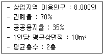
- 약 66000m2
- 약 77000m2
- 약 88000m2
- 약 99000m2
(정답률: 알수없음)
60. 도시기본계획에서 정해야 할 정책방향이 아닌 것은?
- 기반시설에 관한 사항
- 토지이용·개발 및 환경보전에 관한 사항
- 지역적 특성 및 계획의 방향· 목표에 관한 사항
- 광역시설의 배치·규모·시설에 관한 사항
(정답률: 알수없음)
4과목: 지적학
61. 필지마다 지번을 붙여 구분하는 이유로 적당하지 않은 것은?
- 독립성
- 특정성
- 위치파악의 기준성
- 가치성
(정답률: 알수없음)
62. 다음 중 지적측량의 대상이 아닌 것은?
- 지적공부를 복구 하고자 할 경우
- 도로 및 건축물을 건설할 경우
- 신규 등록을 하려고 할 경우
- 등록 전환을 행하는 경우
(정답률: 알수없음)
63. 다음 중 결수연명부에 관한 설명으로 옳은 것은?
- 강계(疆界)지역을 조사 등록한 장부
- 소유권의 분계(分界)를 확정하는 장부
- 지반의 고저가 있는 토지를 정리한 장부
- 지세대장을 겸한 토지조사준비를 위하여 만든 과세부
(정답률: 알수없음)
64. 다음 중 지적의 표현방식이 아닌 것은?
- 문자
- 수치
- 지형
- 도화
(정답률: 알수없음)
65. 토지조사사업 당시 지번의 부번방식으로 가장 많이 사용된 것은?
- 기우식
- 사행식
- 단지식
- 절충식
(정답률: 알수없음)
66. 토지 표시사항의 공시원칙에 따른 지적공부 관리원칙은?
- 보존주의
- 기밀주의
- 공증주의
- 공개주의
(정답률: 알수없음)
67. 우리나라 지적제도의 기본이념에 해당하는 것은?
- 지적민정주의
- 인적편성주의
- 지적형식주의
- 지적비밀주의
(정답률: 알수없음)
68. 다음 중 현대 지적의 성격이 아닌 것은?
- 정보성
- 전문성
- 사적 기능성
- 서비스성
(정답률: 알수없음)
69. 도로를 중심으로 생활권이 형성되는 택지지역에서 통신에 가장 편리한 지번 설정방법이라 할 수 있는 것은?
- 단지식(團地式)
- 사행식(蛇行式)
- 기우식(奇偶式)
- 블록식(Block式)
(정답률: 알수없음)
70. 토지 등록을 위한 필지의 개념으로 옳지 않은 것은?
- 토지의 등록 단위
- 지번부여 지역 단위
- 인위적 구획 단위
- 토지의 거래단위
(정답률: 알수없음)
71. 지적은 지형, 지질 또는 국유, 민유 등 소유관계에 구애됨이 없이 어떤 객체를 대상으로 하는가?
- 지물
- 공부
- 필지
- 등록
(정답률: 알수없음)
72. 물권객체로서 다른 토지와의 구분을 유일하게 표상하는 토지표시 사항은?
- 토지소재
- 지번
- 지목
- 경계 또는 좌표
(정답률: 알수없음)
73. 백제의 지적 담당기관은?
- 조부
- 내두좌평
- 공부
- 호조
(정답률: 알수없음)
74. 양전(量田) 개정론자와 그가 주장한 저서로 바르게 연결되지 않은 것은?
- 정약용-목민심서
- 이기- 해학유서
- 서유구-의상경계책
- 김정호-동국여지도
(정답률: 알수없음)
75. 토지소유권을 보호하는데 주목적을 두고 토지의 등록사항이 정확하지 못할 경우 발생하는 손해에 대하여 선의의 제3자를 보호하기 위한 지적제도는?
- 다목적지적
- 토지정보시스템
- 법지적
- 세지적
(정답률: 알수없음)
76. 다음 중 토지등록의 제원칙이 아닌 것은?
- 등록의 원칙
- 특정화의 원칙
- 국정주의
- 형식적 심사 원칙
(정답률: 알수없음)
77. 수치지적제도의 설명으로 옳지 않은 것은?
- 필지의 면적이 넓고 정방형의 토지에 적합
- 토지의 경계점 위치를 평면직각종횡선좌표로 표시
- 경계점좌표등록부 시행지역에서도 일반 지적도는 비치
- 세지적 제도 하에서 주로 의존
(정답률: 알수없음)
78. 조선시대의 문기(文記)에 관한 설명으로 옳지 않은 것은?
- 현재의 부동산 매매계약서와 같은 것이다.
- 3부 작성하여 매수인, 집필인, 관에 비치하였다.
- 문기는 입안청구 시는 물론 소송의 유일한 증거다.
- 상속, 증여, 임대차의 경우는 작성하지 않았다.
(정답률: 알수없음)
79. 토지표시사항은 지적공부에 등록하여야만 효력이 발생한다는 이념은?
- 국정주의
- 형식주의
- 공개주의
- 직권주의
(정답률: 알수없음)
80. 토지이동에 관한 설명 중 옳지 않은 것은?
- 신규등록은 토지이동에 속한다.
- 소유자변경, 토지등급 및 수확량 등급 수정도 토지이동에 속한다.
- 등록전환, 지목변경의 신청기한은 60일이내이다.
- 토지이동이란 토지의 표시를 새로이 정하거나 변경 또는 말소하는 것을 말한다.
(정답률: 알수없음)
5과목: 지적관계법규
81. 도시계획시설사업의 시행자가 설치하는 공동구의 관리에 관한 다음 설명중 적합치 않은 것은?
- 공동구는 특별시장, 광역시장, 시장 또는 군수가 관리한다.
- 공동구점용예정자가 부담하여야 하는 공동구 설치비용의 부담비율은 공동구의 점용예정면적에 의한다.
- 공동구의 부담금은 매 분기별로 분할 납부케 할 수있다.
- 관리자는 1년에 1회 이상 공동구의 안전점검을 실시하여야 한다.
(정답률: 알수없음)
82. 지번변경승인신청시 필요한 서류가 아닌 것은?
- 지번변경사유를 기재한 승인신청서
- 지번변경대상지역의 지번별조서
- 지번변경대상지역의 일람도사본
- 지번변경대상지역의 도면사본
(정답률: 알수없음)
83. 지적법시행령상 축척변경으로 청산금 산출결과 증가된 면적에 대한 청산금의 합계와 감소된 면적에 대한 청산금의 합계에 차액이 생길 때 부족액의 부담자는?
- 당해 지방자치단체
- 행정자치부장관
- 축척변경위원회
- 지적위원회
(정답률: 알수없음)
84. 용도지역안에서의 건폐율의 최대한도를 나타낸 것으로 틀린 것은?
- 주거지역 : 70% 이하
- 상업지역 : 80% 이하
- 공업지역 : 70% 이하
- 녹지지역 : 20% 이하
(정답률: 알수없음)
85. 지적도의 축척으로 틀린 것은?
- 1000분의 1
- 3000분의 1
- 2600분의 1
- 2400분의 1
(정답률: 알수없음)
86. 등기소에서 등기를 한후 지적공부소관청에 통지를 하지 않아도 되는 등기 사항은?
- 소유권의 보존등기
- 등기명의인의 표시경정등기
- 등기명의인의 표시변경등기
- 부동산의 표시변경등기
(정답률: 알수없음)
87. 토지소유권의 득실변경에 관한 등록사항 중 소관청이 조사하여 등록하는 것은?
- 도시개발사업 확정
- 지적복구
- 신규등록
- 미등기 토지의 상속
(정답률: 알수없음)
88. 다음 중 대지권등록부의 등록사항에 해당되지 않는 것은?
- 면적
- 지번
- 대지권비율
- 소유자의 성명
(정답률: 알수없음)
89. 국토의 계획 및 이용에 관한 법률의 용도지역에 관한 설명중 옳지 않은 것은?
- 주거지역은 전용주거지역, 일반주거지역, 준주거지역으로 세분된다.
- 상업지역은 중심상업지역, 일반상업지역, 근린상업지역, 유통상업지역으로 세분된다.
- 녹지지역은 자연녹지지역과 생산녹지지역으로 세분된다.
- 공업지역은 전용공업지역, 준공업지역, 일반공업지역으로 세분된다.
(정답률: 알수없음)
90. 물권의 특성이 아닌 것은?
- 부동산에 관한 법률행위로 인한 물권의 득실변경은 등기해야 효력이 생긴다.
- 상속, 공용징수, 판결, 경매, 기타 법률의 규정에 의한 물권의 취득도 등기를 요한다.
- 동산에 대한 물권의 양도는 그 동산을 인도하여야 효력이 생긴다.
- 양수인이 이미 그 동산을 점유한 때에는 당사자의 의사표시만으로 그 효력이 생긴다.
(정답률: 알수없음)
91. 미등기건물의 소유권 보존등기 신청을 할 수 없는 경우는 다음 사항중 어느 것인가?
- 공유자 1인이 자기소유지분만 보존등기를 신청하는 경우
- 건축물대장등본에 의하여 소유자로서 등록되어 있는 것을 증명하는 자가 신청하는 경우
- 판결에 의하여 자기 소유권을 증명한 자가 신청하는 경우
- 수용으로 인하여 소유권을 취득하였음을 증명하는 자가 신청하는 경우
(정답률: 알수없음)
92. 다음 중 지목을 체육용지로 설정할 수 없는 것은?
- 야구장
- 승마장
- 골프장
- 경마장
(정답률: 알수없음)
93. 토지거래계약에 관한 허가구역에서 토지거래계약 허가 신청이 불허가 처분된 경우 토지소유자가 취할 수 있는 권리구제 수단으로 적합한 것은?
- 허가권자에 대한 이의 신청 또는 매수청구
- 건설교통부장관에 대한 이의 신청 또는 매수청구
- 시장· 군수 또는 구청장에게 이의를 신청
- 국토이용 계획심의회의에 대한 이의신청 또는 건설교통부장관에 대한 매수청구
(정답률: 알수없음)
94. 지적공부중 토지 및 임야대장에 등록되는 사항으로 틀린것은?
- 토지의 소재
- 소유자의 성명 또는 명칭, 주소 및 주민등록번호
- 도곽선과 그 수치
- 지번과 지목
(정답률: 알수없음)
95. 지적도 등록사항에 오류가 있음을 발견한 때 정정할 수 있는 방법에 대한 설명으로 적합치 않은 것은?
- 소관청은 직권으로 조사 또는 측량하여 이를 정정할 수 있다.
- 토지 소유자가 소관청에 그 정정을 신청할 수 있다.
- 오류사항 정정으로 인하여 인접 토지의 경계가 변경되는 경우 그 정정은 인접 토지소유자의 승낙서에 의하여야 한다.
- 오류사항이 토지소유자에 관한 사항일때에는 지적공부등본에 의하여야 한다.
(정답률: 알수없음)
96. 도시개발사업 시행자가 확정된 청산금을 징수하거나 교부하여야 하는 시기는?
- 환지계획시
- 환지계획 공고시
- 환지처분 직후
- 환지처분 공고후
(정답률: 알수없음)
97. 건축법상 용어의 설명으로 틀린 것은?
- 건폐율은 대지면적에 대한 건축면적의 비율이다.
- 용적율은 대지면적에 대한 건축물의 연면적의 비율이다.
- 용적율의 산정에서 연면적이란 하나의 건축물의 지하층과 주차장면적을 포함한 각층의 바닥면적의 합계를 말한다.
- 건축물의 높이란 지표면으로부터 당해 건축물의 상단까지의 높이를 말한다.
(정답률: 알수없음)
98. 지적법상의 토지이동으로 볼 수 없는 것은?
- 토지대장에 등록된 소유권변경
- 지적공부에 등록된 지목변경
- 지적도에 등록된 경계변경
- 경계점좌표등록부에 등록된 좌표변경
(정답률: 알수없음)
99. 지적기술자의 징계처분자는 다음 중 누구인가?
- 중앙지적위원회 위원장
- 소관청 또는 도지사
- 행정자치부장관
- 행정자치부 지방재정국장
(정답률: 알수없음)
100. 민법상 법률행위를 당연히 취소할 수 있는 자가 아닌 것은?
- 능력자
- 하자있는 의사표시를 한 자
- 하자있는 의사표시를 한 자의 대리인
- 하자있는 의사표시를 한 자의 승계인
(정답률: 알수없음)